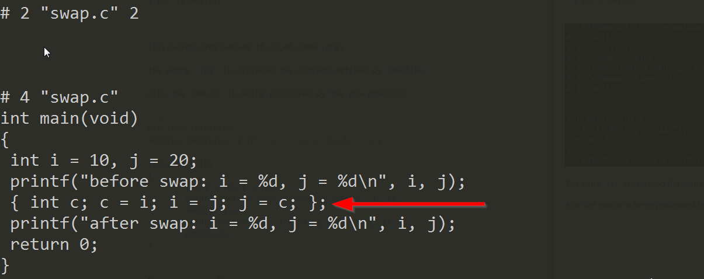
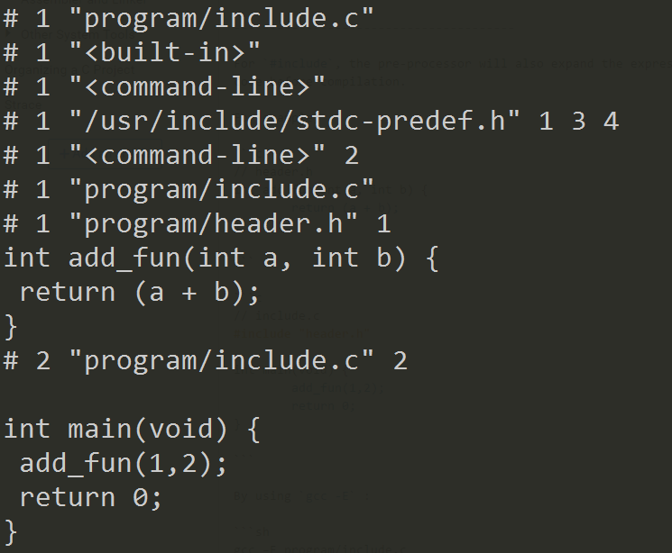

Pre-processor
At this stage, the macro such as #define, #include and etc are expanded to C code.
For example,
/* hello.c */
#define TXT "hello"
int main(void) {
printf("%s\n", TXT);
return 0;
}
Try to compile it with gcc -E:
$ gcc -E hello.c

The entry TXT is replaced the content defined by #define.
Also the marco is being processed by the pre-processor.
/* swap.c */
#include <stdio.h>
#define SWAP(a,b) { int c; c = a; a = b; b = c; }
int main(void)
{
int i = 10, j = 20;
printf("before swap: i = %d, j = %d\n", i, j);
SWAP(i, j);
printf("after swap: i = %d, j = %d\n", i, j);
return 0;
}
By using gcc -E:
$ gcc -E swap.c

For #include, the pre-processor will also expand the expression and put it in code before compilation.
For example,
// header.h
int add_fun(int a, int b) {
return (a + b);
}
// include.c
#include "header.h"
int main(void) {
add_fun(1,2);
return 0;
}
By using gcc -E :
gcc –E program/include.c
